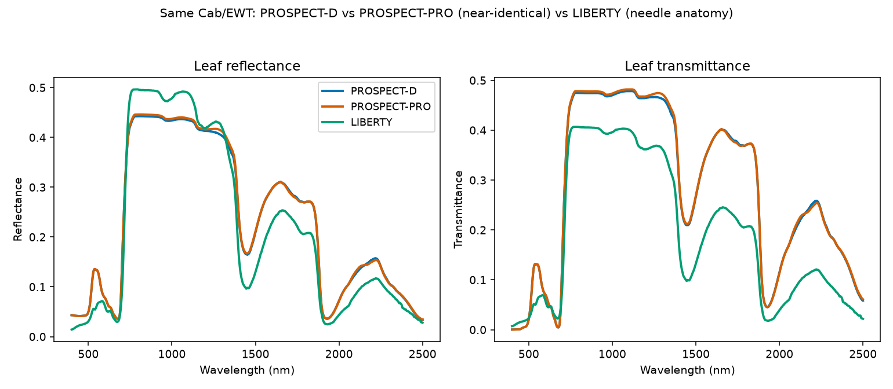
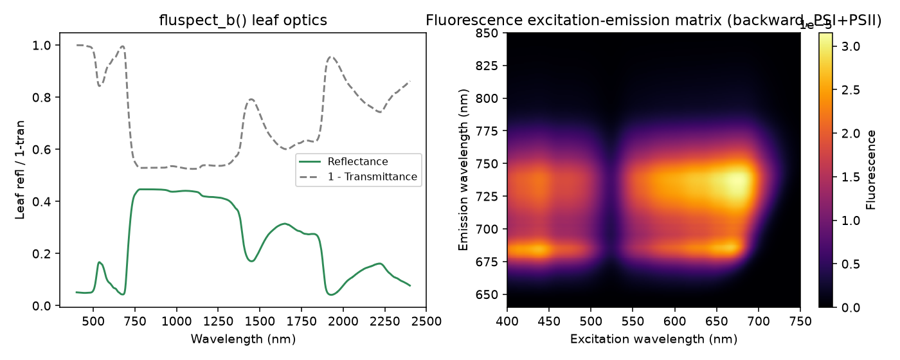
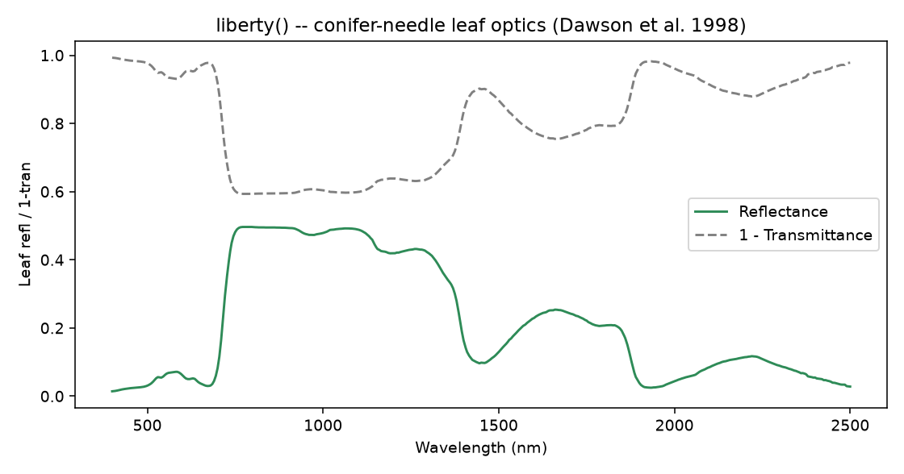

03. Leaf Radiative Transfer Models
What you will learn
What each of the four leaf models simulates, and the one structural difference that actually separates them.
Which inputs matter for each.
How to run, plot, and scientifically interpret all four side by side.
Concept
A leaf model turns a handful of biochemical/structural traits into a reflectance and transmittance spectrum. All four models here share the same core idea (light absorbed by pigments/water/dry matter, scattered by internal cell-wall/air-space interfaces) but differ in exactly what they add on top of that core:
Model |
What it simulates |
What makes it different |
|---|---|---|
PROSPECT-D |
Reflectance/transmittance from pigments ( |
The reference broadleaf model. |
PROSPECT-PRO |
Same physics, but splits |
Only the dry-matter parameterization differs. |
Fluspect-B / Fluspect-Cx |
PROSPECT-D’s optics plus chlorophyll-fluorescence excitation-
emission matrices; Fluspect-Cx additionally adds a
photoprotection ( |
Adds fluorescence – needed wherever solar-induced fluorescence (SIF) matters, e.g. 06. SCOPE. |
LIBERTY |
Reflectance/transmittance for conifer needles, from explicit cell geometry instead of PROSPECT’s Fresnel-refraction layer. |
Not a PROSPECT variant – a structurally different model, built for needle anatomy. |
Python tools used
Function |
Key arguments |
|---|---|
|
|
Same as above but |
|
|
|
Adds |
|
|
Run the example
from toolsrtm import prospect_d, prospect_pro, liberty, fluspect_b, fluspect_cx
pro_d = prospect_d(N=1.5, Cab=40, Car=8, Anth=1, Cbrown=0, EWT=0.01, LMA=0.009, alpha=40)
pro_pro = prospect_pro(N=1.5, Cab=40, Car=8, Anth=1, Cbrown=0, EWT=0.01, LMA=0.0,
alpha=40, Prot=0.002, CBC=0.007)
lib = liberty(cell_d=40, inter_c=0.045, baseline_abs=0.0006, leaf_thick=1.6,
albino_abs=0, Cab=40, EWT=0.01, lign_cell=2, Nitrogen=1)
flu_b = fluspect_b(N=1.5, Cab=40, Car=8, Anth=1, EWT=0.01, LMA=0.009, Cs=0, fqe=0.01, Cx=0)
flu_cx = fluspect_cx(N=1.5, Cab=40, Car=8, Anth=1, EWT=0.01, LMA=0.009, Cs=0,
fqe=0.01, Cx=0.3, Prot=0.0, CBC=0.0)
print("PROSPECT-D reflectance at 550nm:", pro_d.refl[150])
print("PROSPECT-PRO reflectance at 550nm:", pro_pro.refl[150])
print("LIBERTY reflectance at 550nm:", lib.refl[150])
print("Fluspect-B reflectance at 550nm:", flu_b.refl[150])
print("Fluspect-Cx reflectance at 550nm:", flu_cx.refl[150])
print("Fluspect-B fluorescence matrix (MbI) shape:", flu_b.MbI.shape)
import matplotlib.pyplot as plt
for name, r, c in [("PROSPECT-D", pro_d, "#0072B2"), ("PROSPECT-PRO", pro_pro, "#D55E00"),
("LIBERTY", lib, "#009E73")]:
plt.plot(r.lambda_, r.refl, color=c, label=name)
plt.legend(); plt.xlabel("Wavelength (nm)"); plt.ylabel("Reflectance")
Result
Printed output (exact, deterministic):
PROSPECT-D reflectance at 550nm: 0.13359835005159199
PROSPECT-PRO reflectance at 550nm: 0.1340437450891865
LIBERTY reflectance at 550nm: 0.062101770920629594
Fluspect-B reflectance at 550nm: 0.15995957791874202
Fluspect-Cx reflectance at 550nm: 0.14156441320107857
Fluspect-B fluorescence matrix (MbI) shape: (211, 351)
{kind=link}

Real output: PROSPECT-D and PROSPECT-PRO overlap almost everywhere (same underlying physics, same total dry matter – LMA=0.009 is equivalent to Prot=0.002 + CBC=0.007); LIBERTY (needle anatomy) is visibly different in the NIR plateau and SWIR.
{kind=link}

Real output: Fluspect-B’s reflectance/transmittance (left) and its backward chlorophyll-fluorescence excitation-emission matrix (right, MbI) – the two characteristic emission peaks near 685nm (PSII) and 740nm (PSI) are visible at both the blue (~440nm) and red (~660-680nm) chlorophyll excitation bands. No other leaf model on this page produces this second plot at all.
{kind=link}

Real output: LIBERTY’s conifer-needle optics – flatter NIR plateau and different SWIR absorption shape than broadleaf PROSPECT, reflecting the needle-specific anatomy the model targets.
Interpretation
PROSPECT-D and PROSPECT-PRO track each other closely everywhere (0.1336
vs. 0.1340 at 550nm) – expected, since LMA=0.009 and
Prot=0.002 + CBC=0.007 represent the same total dry-matter mass
through the same underlying absorption physics, just split two
different ways. LIBERTY sits well below both at 550nm (0.062) and
diverges further in the NIR/SWIR (see the figure) – a real anatomical
difference, not a bug: conifer needles pack mesophyll cells more densely
than broadleaf tissue, giving less internal air-space scattering and
therefore a flatter, lower NIR plateau. Fluspect-B is close to but not
identical to PROSPECT-D (0.160 vs. 0.134 at 550nm, within ~1% of each
other by 800nm in the NIR plateau) – the two share the same absorption
physics but not byte-identical coefficient tables, so expect small,
mostly visible-region differences, not an exact match. Fluspect-Cx’s
extra Cx=0.3 term (partial photoprotection) shifts its 550nm value
between Fluspect-B’s and PROSPECT-D’s, consistent with a small
absorption change rather than a structural one.
Try it yourself
Set
Cx=1.0(full photoprotection) onfluspect_cxand compare againstCx=0.Swap
lib’sinter_c(intercellular air-space fraction) from 0.045 to 0.06 and see how much closer the NIR plateau moves toward PROSPECT-D’s.Compute
flu_b.MbI.sum()at a few differentfqevalues and check it scales linearly (it should –fqeis a quantum efficiency, a direct multiplier on emitted fluorescence).
Common mistakes
fluspect_b/fluspect_cx’s arguments are largely positional – check the signature before assuming keyword order matchesprospect_d’s.fluspect_breturns separate.MbI/.MbII(PSI/PSII);fluspect_cxreturns one combined.Mbinstead – not the same attribute name.LIBERTY’s inputs are real cell geometry (micrometers, fractions), not PROSPECT pigment concentrations – copying a PROSPECT trait value into LIBERTY’s similarly-named argument is not meaningful.
Next
04. Canopy Radiative Transfer Models – turning any of these leaf spectra into a canopy-level reflectance, and what changes between fourSAIL, fourSAIL2, and INFORM.
Using R? -> ToolsRTM Tutorial 02: From Leaf to Canopy Reflectance